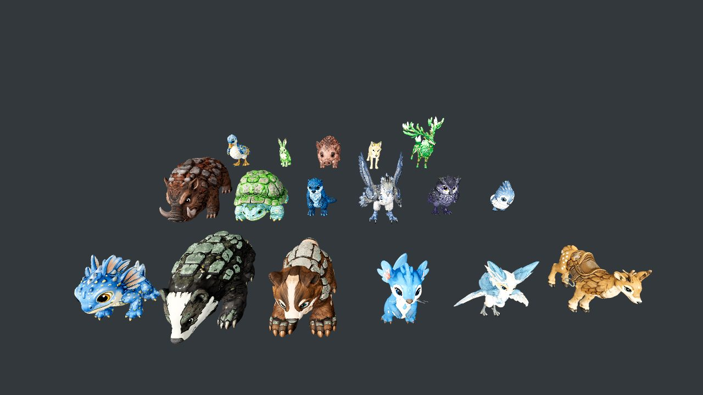

Seven roads out of the Meadows. None of them arrive anywhere.
Broken bridges, ruined gates, abandoned trade posts, and country you can see across and cannot reach. Team Tether did not build seven dead ends — they cut seven roads. The eight regions of this world were one place once, and the ravines, widened rivers and standing storms that keep them apart are not geography. They are held open, deliberately, and Team Tether holds all eight of the strongholds doing the holding.
A divided world is an easy world to control. Nothing moves between regions — trade, people, creatures, news — except through them, their pylons drain the land they stand on season by season, and every Warden is indispensable because the barrier he keeps is the only way through.
Their own line is that the connected world was unstable, and that the barriers made peace. Some of it may even be true. Team Tether is not written as cartoons — a Warden can be sincere while the system he keeps running is not.
Grandpa stopped them once. He is too old to do it twice.
You wake upstairs in his farmhouse and come down into a conversation he has clearly been putting off. He was one of the people who pushed Team Tether back the last time — “when the eight strongholds were still ours”, as he puts it — and every one of that generation is now too old to walk it again. So he gives you the pack instead: fifteen plain orbs, potions, berries, two revives, and his belt.
“It holds five — no more, ever, and that rule is older than Team Tether.” Grandpa Elias, handing over the belt. The game's hardest rule enters your head as a fact about the world rather than as a tooltip.
From the farmhouse door to Meadows Hall
One chapter, about three to four hours if you go straight at it, and it is built as a journey rather than a map full of icons. Meadows Hall is not the ridge above the village — it is seven and a half kilometres of Meadows away, across a river you cannot cross yet, and every leg between here and there leaves you measurably harder to stop: a stronger five, better gear, a route that opened because you opened it.
-
Beat everyone in the village who will fight you
Mira the Meadow Keeper, Oskar the Bridgehand, Tam at the workbench. You get there by doing the actual loop: catch, fight, level, switch, gather, unlock recipes, build a small home and a bed for a creature that needs one. Oskar is the one who matters — he carries the key to the South Bridge, and the road out of the Meadows is shut until you take it off him.
-
South Bridge and the Lower Meadows
Out past the pond and over the bridge, into open country with wild populations that stop losing to the starter Grandpa gave you, roadside trainers who want a battle, and the first Rootstone worth carrying home.
-
The quarry and the Burrow Warrens
Underground. Ground-type creatures on their own turf, a guardian at the bottom, upgrades worth the trip — and the first physical evidence that Team Tether has been moving equipment through here.
-
Break the relay on the river
The river stops you and the crossing is theirs. Grunts, then an officer, then Captain Vance. Winning frees the person they took, kills the local machinery and reopens the crossing — the world is physically different afterwards, and Team Tether stops being a thing Grandpa described.
-
Three captains, three Sigils
The Upper Meadows: high pasture, old growth, ridges, ruins, patrols, Ironwood, and a saddle so you can finally ride. Three regional captains hold the Sigils that physically open the approach to the hall. This is your last honest chance to fix a weakness in the five.
-
Meadows Hall, and the Warden
Outer works, courtyard, the chamber approach — old stone with their hardware bolted through it, louder the further down you go. The Warden is the fight the whole chapter has been assembling your team for. He is not a sneer in a uniform: he believes the barriers are load-bearing and he has an argument for it, and you have to make your choice against the argument rather than against a villain.
-
Then the machinery fails
The drained ground starts coming back, and one of the seven roads stops being a dead end: the country beyond it physically arrives. Not as a menu unlock and not as somewhere you can walk today — the bridge is still gone and the drop has not got any kinder — but it is out there now, and it was not before. Six roads to go, and no idea what is behind any of them.
Five, and you are in the fight with them
None of the above is a cutscene you unlock. It is a survival, crafting and creature-training game built in Godot for a handheld first, and these four rules are what make the road feel the way it does.
- Five, and only fiveYour whole roster is the five creatures on your belt. There is no storage box to park the rest in, so every catch is a decision about what you give up.
- You pilot the fightCombat is real time and hands you the controls of your creature, inside an arena that forms right where you engaged. There is no dodge button — moving is the dodge, and attacks are aimed and can miss.
- The throw is aimedTo catch, you take the camera back to your trainer, and a trajectory arc draws where the orb will go. Your creature is left undefended while you line it up, and the opponent does not stop.
- The human cannot fightYou have no weapon. What you have is a creature, a throw, and where you chose to stand.
- They wear downInjury, tiredness and hunger are real and slow, not a fail state. A creature that took a beating needs a bed and a night to come back, and while it rests you are down to four. Feeding and resting the five is half of what the limit means.
The arena forms where you were standing
Not a separate scene, not a turn queue. You engage in the field you were crossing, and you drive your creature yourself until one side is done.
Thirteen to catch. Five to keep.
Ground, water and air — no fire, no electric, not in this biome. Seventeen species are in the chapter and thirteen of them are out there to be caught: three are the starters, which are Grandpa's to give and never appear in the wild, and one is not a wild creature at all. Every one is modelled from the project's own concept art. By the time you reach the hall your five have a history: one from the first morning, one that cost you something, one you kept because it can carry you uphill.

At the bottom of the hall, something asks to come with you — and your belt is already full. The chapter is built to make that hurt. Whatever you answer, the answer is the ending: these are my five.
Weather, the dark, and what happens after
The meadow is not one clear afternoon. Rain and fog roll through, some creatures only come out at night, and after sunset you carry your own light or you do not see the path. And the world keeps score: kill a drain station and the ground around it recovers, free the Meadows and the shape of the region changes for good — which is not the same as changing for the better. Things that could not reach you before can reach you now.
Recent changes
Honest state of it
This is one chapter, not a finished game. What is here is the Meadows, end to end: the opening morning, the village and the people in it, wild combat and catching, trainers who want a battle, levels and moves and evolution, building, riding, weather, day and night, and saves. What is not here is the seven biomes after it — and the chapter is still being hardened, so expect rough edges on the way to the hall.